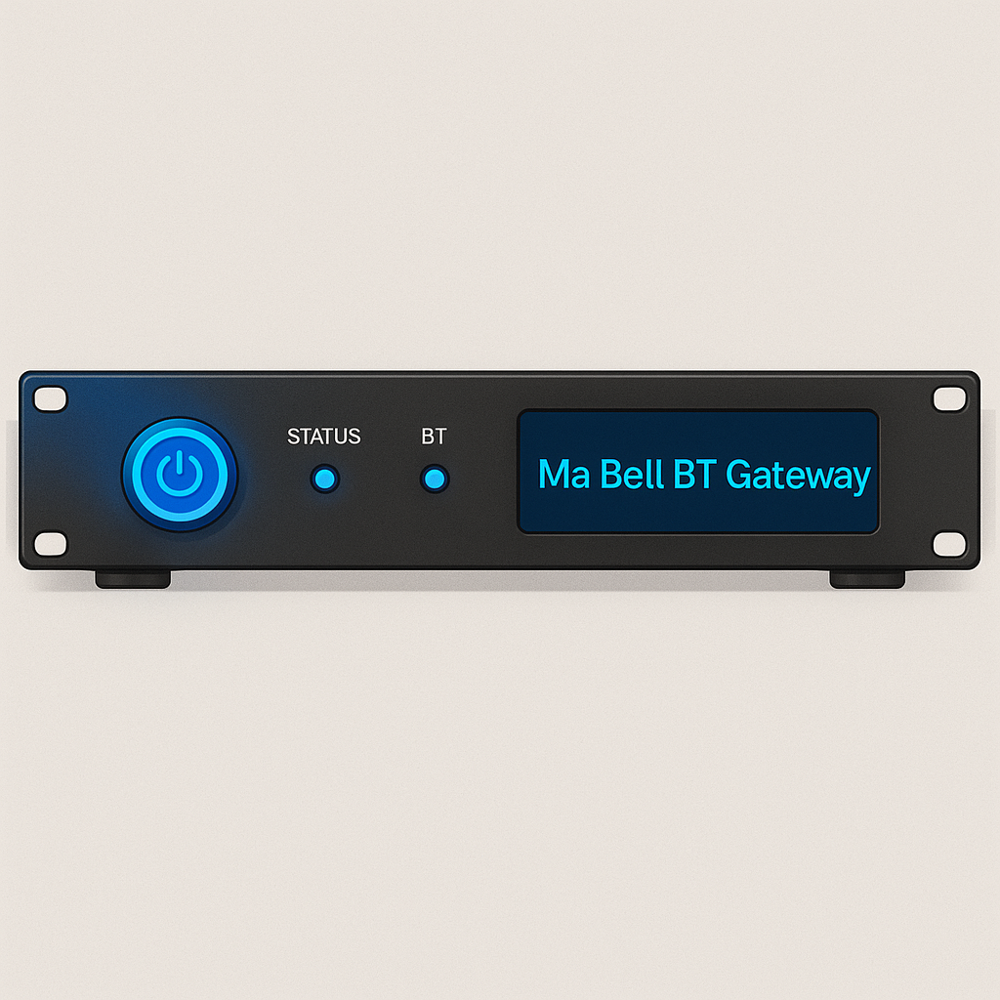
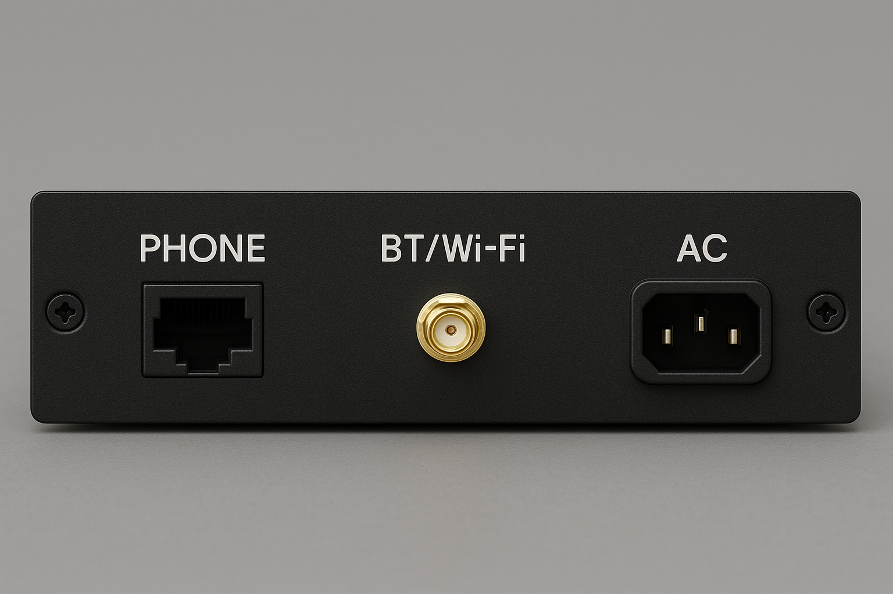

Enclosure Design
The Ma Bell Bluetooth Gateway is designed to be housed in a 1U 19-inch rackmount enclosure, but beyond its form factor, the enclosure must accommodate a range of functional and electrical components, both legacy and modern. This section outlines the enclosure requirements and the design considerations for each face of the unit.
Front Panel
{kind=link}
The front panel presents the device’s user-facing controls and status indicators. Key elements include:
Power button — momentary switch with integrated LED ring (e.g., 12V or 5V illuminated)
Status LEDs — at minimum: - STATUS (system operational) - BT (Bluetooth connection/activity)
Display — optional LCD or OLED panel (e.g., I2C 128x32) to show pairing status, call state, or diagnostics
Optional ventilation slots or mesh — depending on internal power supply heat dissipation
Rack ears — standard 19” mounting flanges with holes for rack screws
Back Panel
{kind=link}
The rear panel must handle all external I/O and power connections. The final design includes:
PHONE - RJ45 jack wired to support analog telephone output - Center pair (Green/Red) provides Tip and Ring for loop current and audio - Outer pair (Yellow/Black) optionally carries 9V AC to power the illuminated rotary dial lamp, as found in many ITT Slimline and Western Electric phones - Internal circuitry provides ringing voltage, tone generation, and rotary pulse decoding
BT/Wi-Fi Antenna - Single external SMA antenna connector - The ESP32-WROVER-IE uses a shared RF front-end for both Bluetooth and Wi-Fi - ✅ External antenna connector – The “IE” version includes a u.FL connector for an external antenna, ensuring strong signal coverage throughout the home
AC Power Inlet - Standard IEC 60320 C14 jack for main AC input (e.g., 120V/240V) - Powers the internal AC-DC supply that drives all system voltage rails - Internally fused and optionally switchable
Internal Layout Considerations
The enclosure must accommodate and isolate:
Custom PCB(s) for power delivery, signal conditioning, and ESP32 control
Audio coupling transformers and opto-isolated circuits
AC-DC power supply unit — potentially a small enclosed module or DIN-rail PSU
Voltage step-up/step-down regulators — for bell voltage, lamp power, ESP32 logic, etc.
Cable routing paths — to keep AC and signal wires separated and reduce noise
Standoffs or brackets — for securely mounting boards and modules
Labeling and Aesthetics
For clarity and authenticity, the enclosure should include:
Silk-screened or engraved labeling for ports and indicators
Iconic “Ma Bell” or Bell System-style typography (optional)
A matte black or brushed aluminum finish for a professional appearance